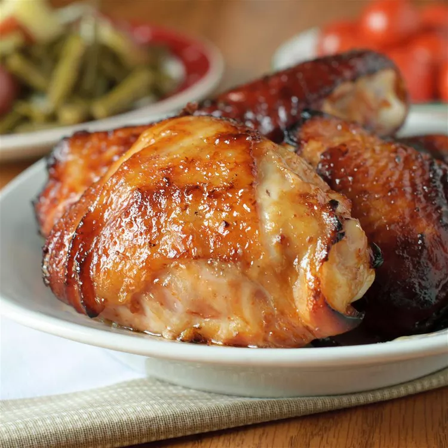

Chicken Thighs

Description
Pan fried chicken thighs made easy
Ingredients
- Bone, or boneless Chicken thighs with the skin*.
- Salt
- Pepper
- Butter**
*Skin is a must.
I debone them, but it isn't a requirement.
**I use butter, but whatever you want to baste them with should work. Just anything to help them stay moist!
Steps
- Debone thighs if desired
- Salt, and pepper both the skin, and meat Don't under season the meat*
- Preheat frying pan to medium-high heat
- Place chicken skin side down on pan
- Place butter on the chicken
- Put a lid on the pan
- Cook for about 15-30 minutes**
- Baste with the butter during this cooking time ocassionialy. Not to often though. You don't want too much heat escaping the pan
- Flip chicken over to let the other side cook for about 5 minutes. It is fully cooked already, but I like the flavor it adds
- Enjoy with rice, or whatever you eat with chicken.
*If your chicken is not flavorful; Then you need to add more salt, and pepper! The skin doesn't need that much, but the meat might need more than you expect. Pay attention to the thickness, and season more at the thick parts.
**Occasionaly check the skin. If it is very crispy looking move to the next step.